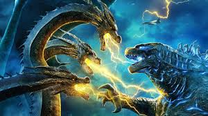
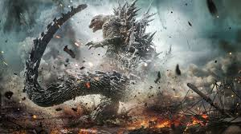

The Evolution of Godzilla Movies

1950s-1970s: The Birth of Godzilla and His Classic Adventures
The original Godzilla was a solo force of nature, rampaging across Tokyo with little to no remorse. However, as the franchise progressed, Godzilla transitioned from villain to anti-hero. The 1960s and 1970s saw Godzilla’s character become more heroic, as he began battling other kaiju to protect humanity. This era saw the introduction of beloved monsters such as Mothra, Rodan, and King Ghidorah, cementing Godzilla's status as Earth's protector.
The Heisei Era (1984-1995): A Darker, More Powerful Godzilla
In the 1980s, Godzilla's franchise was revived with a darker tone in films like The Return of Godzilla (1984). This era, known as the "Heisei Era," depicted Godzilla as a more powerful, destructive force, but still with a heroic edge. This era also introduced some of the most unique kaiju, including Biollante and the upgraded Mechagodzilla.
The Millennium Era (1999-2004): A Fresh Start
After the end of the Heisei Era, Toho rebooted Godzilla with a new timeline. The Millennium Era had varied interpretations of Godzilla, from the re-imagined, violent Godzilla 2000 to the more experimental Godzilla: Final Wars (2004). The kaiju battles became grander, showcasing Godzilla's enduring legacy and ability to adapt to changing cinematic tastes.
The MonsterVerse (2014-Present): Godzilla in the West
In 2014, Legendary Pictures launched the MonsterVerse with Godzilla, a reimagining of the creature for Western audiences. The film was a massive success, leading to sequels such as Kong: Skull Island (2017), Godzilla: King of the Monsters (2019), and Godzilla vs. Kong (2021). These films blended classic kaiju battles with modern visual effects, introducing new generations to Godzilla's mythical world.
A Cultural Icon
Today, Godzilla is more than just a movie monster. He represents a global cultural touchstone, appearing in countless forms of media and embodying themes that resonate across time. Whether through environmental concerns, the destructive nature of nuclear weapons, or the complex relationship between humanity and nature, Godzilla remains a symbol of both terror and hope.
Godzilla Movies
- Godzilla 2000: Millennium (1999)
- Godzilla vs. Megaguirus (2000)
- Godzilla, Mothra, and King Ghidorah: Giant Monsters All-Out Attack (2001)
- Godzilla Against Mechagodzilla (2002)
- Godzilla: Tokyo S.O.S. (2003)
- Godzilla: Final Wars (2004)
- Godzilla (2014) (Legendary Pictures, MonsterVerse)
- Godzilla: King of the Monsters (2019) (MonsterVerse)
- Godzilla vs. Kong (2021) (MonsterVerse)